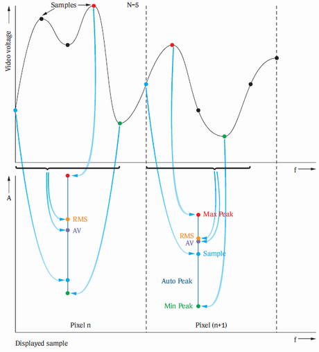
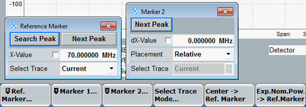

Defines how the result traces (1001 values) are calculated from the raw set of samples (per "pixel").

See also: "Statistical Results"
"Average" | The logarithmic or linear average of the sample values is displayed (see averaging mode). |
"RMS" | The RMS value of the sample values is displayed. |
"Sample" | The value of the first sample is displayed. |
"AutoPeak" | The range between "MinPeak" and "MaxPeak" is displayed. |
"MinPeak" | The smallest sample power is displayed. |
"MaxPeak" | The largest sample power is displayed. |
-/-
Defines how the R&S CMW calculates the average traces from the current results.
"Logarithmic" | Averaging of the displayed current dBm values. In frequency ranges where the trace shows random variations (noise), logarithmic averaging decreases the displayed signal level. |
"Linear" | Averaging of the linear powers: The current dBm values are converted to linear power values (in W) and averaged. The result is reconverted into a dBm value and displayed. The result is the true average measured power at any trace point including random effects. |
The "Marker" softkey gives access to the hotkey bar and the three standard markers.

- "Search Peak": Moves the reference marker to the highest peak of the selected trace.
- "Next Peak": Moves the marker to the next lower (or equal) peak, relative to the markers' current Y-values.
- "Center -> Ref. Marker": In frequency sweep mode, sets the (center) frequency to the reference marker's X-value.
- "Exp. Nom. Power -> Ref Marker": Sets the expected nominal power to the reference marker's Y-value.